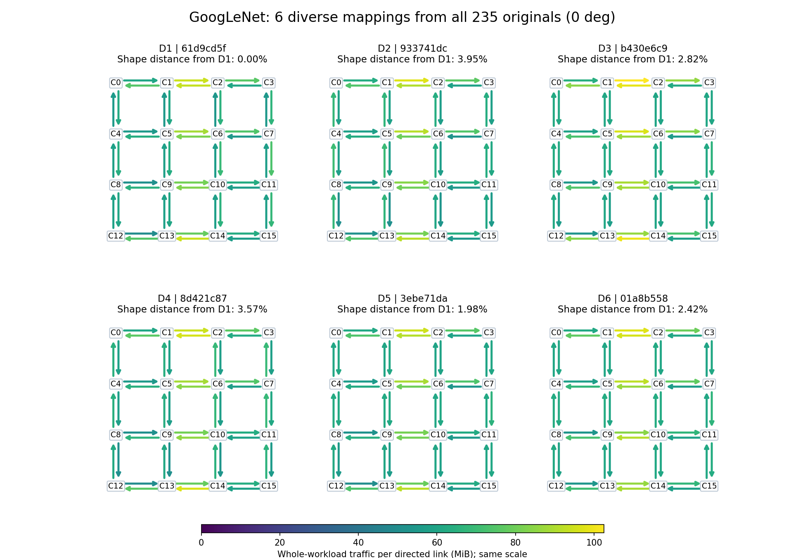
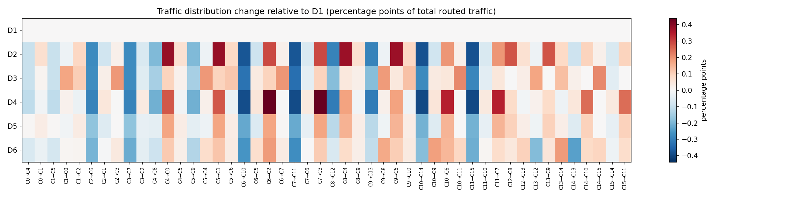

원본 235개 전체, 회전 0°끼리 비교. 방향별 링크 traffic을 전체 합으로 정규화한 뒤 분포 차이가 큰 후보를 선택했습니다.
전체 후보 사이 최대 분포 거리(TV)는 3.95%입니다. 0%는 동일 분포이며, 선택한 두 분포를 맞추려면 전체 traffic 비중 중 이 비율을 다른 링크로 옮겨야 한다는 의미입니다.

아래는 D1 대비 링크별 traffic 비중 변화입니다. 빨강은 증가, 파랑은 감소. 별도 색상 범위이므로 위 절대량 그림과 혼동하지 마세요.
